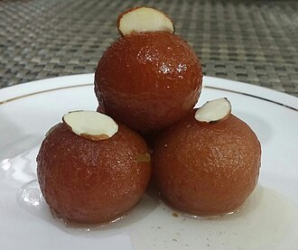

Gulab Jamun
Ingredients
- Wheat flour - 1 cup
- Milk powder – 1/2 cup
- Baking soda – 1 teaspoon
- Cardamom powder - 1 teaspoon
- Sugar - 250 grams
- Ghee or oil for frying - as needed
- Milk – as per requirement
- Food color – 1 pinch
- Rose water – 1 teaspoon
Method
- First of all, fry the flour in a pan till it turns light golden (do not fry it too much) and let it cool.
- Now add roasted flour, milk powder and baking soda in a vessel and mix well.
- Now add milk and knead the dough loosely and leave it for some time.
- Now make small balls of dough.
- Heat ghee in a pan and fry till golden brown.
- Now put them in the prepared sugar syrup and leave it for an hour so that the juice gets absorbed well into the Gulab Jamun.
- Gulab Jamun made from flour is ready.

Peanut Butter Chocolate Chip Cashew Cookies
Ingredients
- 1½ sticks butter, softened
- ½ cup brown sugar
- ½ cup white sugar
- ½ cup Peanut Butter
- 1 teaspoon vanilla
- 2 eggs
- 2 cups cake flour
- 1 teaspoon baking soda
- 1 cup chocolate chips
- 1 cup chopped Whole Cashews
Method
- Heat oven to 350°F. Line 2 baking sheets with parchment paper.
- In bowl of stand mixer cream together butter, and sugars. Mix in peanut butter and vanilla. Beat in eggs.
- In small bowl, combine flour and baking soda. Add to mixer bowl. Blend together. Stir in chocolate chips and cashews.
- Divide dough into 24 balls. Place dough balls on prepared sheets, 2-inches apart.
- Bake cookies 10 to 12 minutes, rotating pans halfway through, or until cookies are lightly browned around edges. Remove to wire rack to cool.
- Your Peanut Butter Chocolate Chip Cashew Cookies are ready.

Gaajar ka Halwa
Ingredients
- 500g carrots, coarsely grated
- 8 green cardamom pods, pierced with a knife
- 500ml whole milk
- 125g unsalted butter
- 100g caster sugar
- 25g raisins
- 25g blanched almonds or chopped pistachios, roughly chopped
Method
- Put the carrots, pierced cardamom pods and milk in a heavy-based pan and bring to the boil. Reduce the heat and simmer for 1 hr, stirring frequently until the milk has evaporated.
- Heat the butter in a deep pan, and stir-fry the carrot mixture for about 15-20 mins until darkened in colour and it has lost its wet, milky appearance.
- Add the sugar, raisins and almonds or pistachios, and stir-fry the halwa for another 5 mins. Serve hot. Will keep, covered in the fridge, for up to a week, or in the freezer for up to six months.
- Your Gaajar ka Halwa is ready.